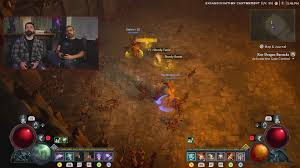

Diablo IV es el último título de la famosa serie de juegos de rol de acción y hack and slash desarrollada por Blizzard Entertainment. Fue lanzado en junio de 2023 y está disponible para PC, PlayStation 4, PlayStation 5, Xbox One y Xbox Series X/S. Este juego continúa la tradición de la serie con una mezcla de acción intensa, exploración y una narrativa oscura y épica.
¿De qué trata Diablo IV?
La historia de Diablo IV se desarrolla muchos años después de los eventos de Diablo III. La amenaza del Diablo ha quedado atrás, pero la humanidad sigue sufriendo las consecuencias del conflicto. El personaje central de esta entrega es Lilith, la hija de Mephisto (uno de los demonios principales de la saga), quien regresa para sembrar el caos y traer la destrucción a Santuario, el mundo donde se desarrollan los eventos de la saga. La trama gira en torno a cómo los héroes intentan detener a Lilith y otras fuerzas oscuras que amenazan con arrasar el mundo.
Los jugadores deben explorar diferentes regiones del mundo de Santuario, enfrentarse a hordas de demonios y monstruos, y descubrir secretos mientras interactúan con personajes, ciudades y facciones en su lucha para derrotar a Lilith y sus seguidores.
